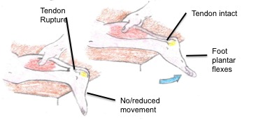

Symptoms
- You could feel a sudden onset pain in the ankle or calf area.
- You may hear a 'pop' sound at the time of the rupture.
- The heel area will become swollen and bruised.
- You will struggle to walk properly.
- You could be able to feel a defect in the tendon.
- You will struggle to point and lift your toes.
- While walking your foot will hang down and won't be able to be lifted easily.
If you believe you have these symptoms gained from a similar mechanism please see a medical professional to be assesed
Mechanism

The most common causes of Achiles Tendon Rupture's are when the foot is plantarflexed (with the toes pointed) this is seen often in landing after jumping or in sprinting, it is also possible to rupture with the toes lifted in a unexpected dorsiflexed position, for example missing a step in a set of stairs or on uneven ground like stepping into a hole.
Examination of Rupture
A doctor will asses your symptoms as well as your medical history and injury mechanism, to check the most likely result of your pain. They will likely asses the movemtn in your foot. They could also use either ultrasound or an MRI scan to see if you have a partial or complete tear.
The Thompson test for Achilles Tendon Rupture is widely used by practioners, and can be done at home if you would like to check for yourself.
Here is a step-by-step guide to the Thompson Test
- Lie face down on a bed, making sure you feet are over the edge.
- Get your friend to squeeze the calf on the injured leg.
- If your Achilles is ruptured, there will be little or no movement in the foot.